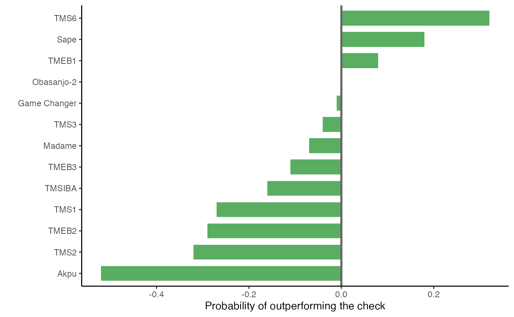

vignettes/vignette-2-gari-eba-consumer-testing.Rmd
vignette-2-gari-eba-consumer-testing.RmdThis vignette demonstrates a workflow for analyzing consumer preference data from decentralized trials of cassava (Manihot esculenta Crantz) varieties in Nigeria and Cameroon. Using the tricot approach [1], 1,000 participants evaluated gari-eba made from 13 cassava genotypes in 2022. The trial was implemented by the International Institute of Tropical Agriculture (IITA) under the RTBFoods project (https://rtbfoods.cirad.fr). Participants assessed overall preference and traits such as color, stretchability, and taste, reflecting diverse consumer priorities.
Building on studies by Olaosebikan et al. (2023) [2] and Emmanuel Alamu et al. (2023) [3], this vignette introduces an alternative workflow. It leverages statistical models, such as the Plackett-Luce model, to analyze overall preference, explore trait-specific performance, and account for consumer heterogeneity. By segmenting the data by groups like country, the analysis uncovers context-specific varietal performance and identifies the best varieties for specific groups.
Additionally, a weighted selection index is proposed to integrate multiple traits, enabling a data-driven approach to ranking varieties. This workflow emphasizes a consumer- and market-oriented approach, offering insights into plant breeding and selection strategies that align with local preferences and environmental contexts. The selection index approach is under development and open for improvements, suggestions and comments.
The cassava data is a data frame with 1,000 observations
and 27 variables, which are described in the data documentation with
?cassava. This vignette will require the packages
PlackettLuce [4], ClimMobTools [5], ggplot2 [6],
and patchwork [7].
library("gosset")
library("ClimMobTools")
library("PlackettLuce")
library("ggplot2")
library("patchwork")
data("cassava", package = "gosset")
dat = cassava
head(dat[, 1:11])## id option_a option_b option_c country gender age
## 1 Osun-pkg1 TMS3 Game Changer TMS6 Nigeria Man 24
## 2 Osun-pkg10 TMS1 TMS3 Obasanjo-2 Nigeria Woman 29
## 3 Osun-pkg100 Game Changer Akpu TMS2 Nigeria Man 41
## 4 Osun-pkg101 TMS6 TMEB2 TMS1 Nigeria Woman 52
## 5 Osun-pkg102 TMEB2 TMS2 Obasanjo-2 Nigeria Woman 40
## 6 Osun-pkg103 Obasanjo-2 Akpu Game Changer Nigeria Woman 23
## consumption consumptionform colour_pos colour_neg
## 1 once a week <NA> C B
## 2 several times a week <NA> A C
## 3 several times a week <NA> A B
## 4 several times a week <NA> A C
## 5 several times a week <NA> C B
## 6 several times a week <NA> A BHere, we select the columns with complete cases to perform the analysis. The remaining traits (tested in both studies) are color, stretchability, taste, and overall preference.
keep = unlist(lapply(dat[1:ncol(dat)], function(x) sum(is.na(x))))
keep = keep == 0
dat = dat[, keep]
names(dat)## [1] "id" "option_a" "option_b"
## [4] "option_c" "country" "gender"
## [7] "age" "consumption" "colour_pos"
## [10] "colour_neg" "stretchability_pos" "stretchability_neg"
## [13] "taste_pos" "taste_neg" "overall_pos"
## [16] "overall_neg"The tricot data, in its original form, has a standard structure for
storing the ranking data in the form of two columns with the trait name
and the value for the best and the worst ranking (e.g., overall_pos,
overall_neg). The function getTraitList() from the
ClimMobTools package runs through the columns in the data
to identify this structure and validates the rankings. The output is a
list with the identified rankings, their strings in the dataset, a
vector with the validated rankings, and the trait name. In the cassava
dataset, the pattern for the best and worst rankings is
c("_pos", "_neg"). We input this to the function
getTraitList() using the argument
pattern =.
# extract list of traits from the data
trait_list = getTraitList(dat, pattern = c("_pos", "_neg"))
# trait names extracted from the function
traits = unlist(lapply(trait_list, function(x) x$trait_label))
# clean trait names and put them title case
traits = gsub("(^|[[:space:]])([[:alpha:]])", "\\1\\U\\2", traits, perl = TRUE)
traits## [1] "Colour" "Stretchability" "Taste" "Overall"Here, we perform some data preparation by defining the column indices for the variables with the cassava sample names, the names of varieties tested in the study, and the position of “Overall” within the trait list. We set Obasanjo-2 as the check variety.
The Plackett-Luce model [4] is used to
analyze the data. First, we transform the data into a PlackettLuce
object using the function rank_tricot(). We use
lapply() to apply the function to the list of traits.
R = lapply(trait_list, function(x) {
rank_tricot(dat,
items = pack,
input = x$string,
validate.rankings = TRUE)
})To fit the model, we use the function PlackettLuce()
from the package ‘PlackettLuce’ [4], also
using lapply(). This returns a list of models, one per
trait. First, we focus on the overall preference. We use the function
plot() to visualize the Plackett-Luce estimates as
log-worth parameters using the argument
log = TRUE. The argument levels = establishes
the order of the varieties in the plot.
The plot shows that the varieties TMS6, Sape and TMEB1 outperform
Obasanjo-2 for overall preference. We use the function
reliability() to identify the improvement achieved by these
varieties against reference Obasanjo-2 [8]. The function returns a data frame with the
reliability estimates, where values above 0.5 indicates that the variety
outperforms the reference. We plot these results using
ggplot().
rel = reliability(mod[[ov]], ref = check)
rel$improvement = round((rel$reliability / 0.5 - 1), 2)
rel = rel[order(rel$improvement), ]
rel$item = factor(rel$item, levels = rel$item)
ggplot(data = rel,
aes(x = improvement,
y = item,
fill = "white")) +
geom_bar(stat = "identity",
width = 0.7,
position = "dodge",
show.legend = FALSE) +
scale_fill_manual(values = "#5aae61") +
geom_vline(xintercept = 0,
colour = "grey40",
linewidth = 1) +
theme_classic() +
labs(x = "Probability of outperforming the check",
y = "")
The reliability estimates show an improvement in overall preference of 32% for TMS6, 18% for Sape and 8% for TMEB1.
So far, we have focused solely on the overall preference. However,
there are other traits to assess. The function worth_plot()
can be used to visually analyze and compare variety performance across
different traits. The values represented in a worth map are
log-worth estimates. The function can be used with
ggplot2 functions to improve the plot.
The worth map confirms the superiority of TMS6, Sape and TMEB1 across the traits, but also presents Madame among the top varieties for color. We will return to this analysis later, but for now, let us examine the data from the perspective of different groups to consider heterogeneity in the participants’ evaluations, as proposed by van Etten et al. (2023) [9].
We will focus on two covariates to analyze the data: gender and
country. The function likelihood_ratio() is used to test
which of these covariates can provide distinguishable rankings within
the groups.
# by gender
llr1 = lapply(R, function(x){
likelihood_ratio(x, split = dat$gender)
})
llr1 = do.call("rbind", llr1)
llr1$trait = traits
llr1## deviance DF_delta Pr(>Chisq) trait
## <dbl> <dbl> <dbl> <chr> <chr>
## 1: 11.7619 12.0000 0.4650 Colour
## 2: 9.8536 12.0000 0.6288 Stretchability
## 3: 7.4512 12.0000 0.8264 Taste
## 4: 8.6690 12.0000 0.7309 Overall
# by country
llr2 = lapply(R, function(x){
likelihood_ratio(x, split = dat$country)
})
llr2 = do.call("rbind", llr2)
llr2$trait = traits
llr2 ## deviance DF_delta Pr(>Chisq) trait
## <dbl> <dbl> <dbl> <chr> <chr>
## 1: 69.3164 12.0000 0.0000 *** Colour
## 2: 24.8679 12.0000 0.0155 * Stretchability
## 3: 26.9415 12.0000 0.0079 ** Taste
## 4: 38.2459 12.0000 0.0001 *** OverallThe likelihood-ratio test indicates that sub-setting the data by country provides statistically different rankings. This test can also be used to validate more complex groupings, such as those generated by cluster analysis or farmers’ typologies, which include a diverse set of variables (e.g., socio-economic and agroecological), as proposed by Voss et al. (2024) [10]. For simplicity, we focus here only on the variable “country.”
Now, returning to the worth map analysis, we can visualize the
performance of the varieties within the groups. We iterate over the
groups by sub-setting the data in a loop. Within the loop, we create the
plots and store them in a list. Finally, we use the
patchwork package to display the two worth maps.
# get the slice variable as a vector
slice = dat$country
# and get the unique values
slice_lvs = unique(slice)
trait_plot = list()
# order of varieties from best to worst in the full dataset
items_lvls = rev(names(sort(rank(coef(mod[[ov]], log = FALSE) * -1))))
for (i in seq_along(slice_lvs)) {
# fit the model also applying the slice
mod_i = lapply(R, function(x) {
PlackettLuce(x[slice == slice_lvs[i], ])
})
# plot the worth map
trait_plot[[i]] = worth_map(mod_i,
labels = traits,
labels.order = c("Overall", "Taste", "Stretchability", "Colour"),
items.order = items_lvls)
}
# plot the two maps using patchwork
trait_plot[[1]] + trait_plot[[2]] + plot_layout(ncol = 1)The segmented analysis reveals contrasting results compared to the previous analysis using the full dataset. It highlights the superiority of TMS6 and TMEB1 in Nigeria, and Game Changer and Sape in Cameroon. This approach provides a visual method to select the best variety overall for each group.
To account for all traits in a data-driven manner when selecting varieties, I propose a selection index approach. This method calculates weighted estimates and derives a selection score that represents the overall performance of the varieties across all traits.
Suppose we have three varieties with standardized probabilities for each trait:
| Variety | Yield (0.5) | Marketability (0.3) | Tolerance to drought (0.2) | Selection Index Score |
|---|---|---|---|---|
| Variety 1 | 0.8 | 0.6 | 0.7 | (0.80.5) + (0.60.3) + (0.7*0.2) = 0.71 |
| Variety 2 | 0.7 | 0.8 | 0.5 | (0.70.5) + (0.80.3) + (0.5*0.2) = 0.68 |
| Variety 3 | 0.6 | 0.7 | 0.9 | (0.60.5) + (0.70.3) + (0.9*0.2) = 0.70 |
Here, Variety 1 would have the highest selection index score, making it a top choice based on this weighted approach.
For this example, we will use the Kendall’s Tau correlation
coefficient [11], estimated with the
function kendallTau(). We began by calculating Kendall’s
Tau correlation coefficients
()
for each trait against the overall preference. This non-parametric
statistic measures the strength and direction of association between two
ranked variables, making it robust to outliers and suitable for ordinal
data. The goal is to identify how strongly each trait aligns with
farmers’ overall preference rankings. We also include the overall
preference in the kendall tau estimation as this trait will also be part
of the selection index.
kendall = lapply(R, function(x){
kendallTau(x, R[[ov]])
})
kendall = do.call("rbind", kendall)
kendall$trait = traits
kendall## kendallTau N_effective Zvalue Pr(>|z|) trait
## <dbl> <dbl> <dbl> <dbl> <chr>
## 1: 0.4260 77.9355 5.5164 0.0000 Colour
## 2: 0.3255 77.8579 4.2138 0.0000 Stretchability
## 3: 0.6180 77.9613 8.0050 0.0000 Taste
## 4: 1.0000 77.9613 12.9531 0.0000 OverallUsing the Kendall () estimates, we derive weights for each trait. These weights represent the contribution of each trait to the selection. To ensure comparability and sum-to-1 constraints, the weights are normalized. The overall preference score had the highest weight due to its perfect Kendall ( = 1.0). While this aligns with intuition, it risks biasing the selection index by disproportionately favoring varieties that score well on “Overall” alone. To address this we apply a penalty specifically to the “Overall” weight to reduce its influence without discarding its importance. We used a logarithmic penalty for “Overall”, as it reduces large values more significantly while maintaining relative differences. After penalizing “Overall” all weights are re-normalized to ensure the sum of weights = 1.
kendall$weights = kendall$kendallTau / sum(kendall$kendallTau)
# identify the "Overall" trait and apply the penalty
kendall$weights[ov] = log(1 + kendall$weights[ov])
# re-normalize weights to ensure they sum to 1
kendall$weights = kendall$weights / sum(kendall$weights)
kendall## kendallTau N_effective Zvalue Pr(>|z|) trait weights
## <dbl> <dbl> <dbl> <dbl> <chr> <dbl>
## 1: 0.4260 77.9355 5.5164 0.0000 Colour 0.1933
## 2: 0.3255 77.8579 4.2138 0.0000 Stretchability 0.1477
## 3: 0.6180 77.9613 8.0050 0.0000 Taste 0.2804
## 4: 1.0000 77.9613 12.9531 0.0000 Overall 0.3786After applying the penalty and re-normalizing, the influence of “Overall” was reduced, and its weight was redistributed proportionally to other traits. The adjusted weights are now ready for inclusion in the selection index to rank cassava varieties. The overarching goal is to have a global selection index that reflects the preferences of the entire population in the dataset. If the groups have distinct preferences or represent different environments, calculating weights separately for each group ensures that the index reflects their unique priorities. Here we assume that the relationships between traits and the “Overall” are consistent across groups.
We iterate over the groups in a loop, storing the model coefficients
in a data frame for visualization with ggplot. The
selection index is computed as:
weights = kendall$weights
select = data.frame()
for (i in seq_along(slice_lvs)) {
# fit the model
mod_i = lapply(R, function(x) {
PlackettLuce(x[slice == slice_lvs[i], ])
})
# extract the coefficients
coeffs = lapply(mod_i, function(x) {coefficients(x, log = FALSE)})
coeffs = do.call("rbind", coeffs)
# apply the weights within the coefficients
coeffs = apply(coeffs, 2, function(x) {x * weights})
coeffs = colSums(coeffs)
# put it in a data.frame
select_i = data.frame(item = names(coeffs),
slice = slice_lvs[i],
score = as.vector(coeffs))
select = rbind(select, select_i)
}
ggplot(data = select,
aes(x = score,
y = item,
fill = slice)) +
geom_bar(stat = "identity",
width = 0.7,
position = "dodge") +
scale_fill_manual(values = c("#d73027", "#4575b4")) +
geom_vline(xintercept = mean(select$score),
colour = "grey40",
linewidth = 1) +
theme_classic() +
theme(legend.title = element_blank(),
legend.position = "bottom") +
labs(x = "Selection score",
y = "")The selection score indicates that the superior varieties for Nigeria are TMS6, TMEB1, TMS3, and Obasanjo-2, while for Cameroon, the varieties Game Changer, Sape, and Madame exhibit superior performance, exceeding the average as indicated by the grey vertical line. This approach contrasts with the previous analysis based solely on overall preference and the visualization provided by the worth map. By accounting for the heterogeneity of consumer preferences, it facilitates the identification of the best varieties for specific groups and market segments.
This vignette demonstrates a workflow for analyzing consumer preference trial data using the tricot approach. By integrating innovative visualization techniques, we explored the performance of cassava varieties across multiple traits and participant groups in Nigeria and Cameroon. The analysis highlights the utility of worth maps and selection scores in identifying superior varieties for specific contexts.
In this study, we identified TMS6, TMEB1, TMS3, and Obasanjo-2 as top-performing varieties in Nigeria, while Game Changer, Sape, and Madame stood out in Cameroon. The selection index approach further enabled the integration of weighted estimates for traits such as color, stretchability, taste, and overall preference, providing a holistic evaluation of variety performance. This flexible approach allows for customization of weights to align with different stakeholder priorities or objectives.
Additionally, the application of subgroup analysis, using country as a covariate, demonstrated the potential to uncover heterogeneity in preferences and tailor variety recommendations. This method could be extended to more complex groupings, such as those based on cluster analyses or farmer typologies incorporating socio-economic and agroecological variables.
Overall, this vignette underscores the value of combining participatory approaches, advanced statistical models, and visualization tools for robust variety selection. By applying these methods, researchers and practitioners can make informed decisions to improve crop variety adoption and enhance food systems in diverse agricultural contexts.